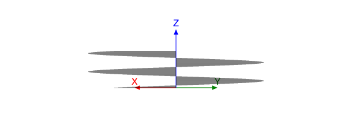
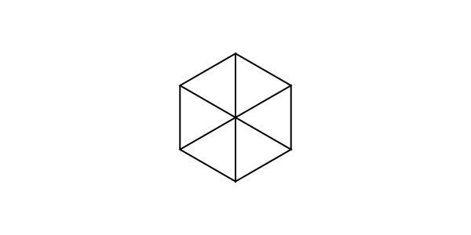
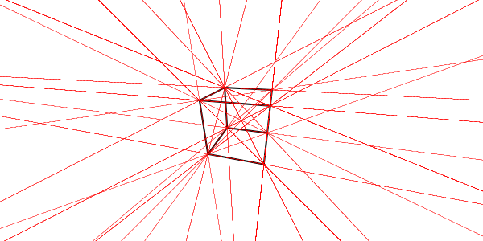
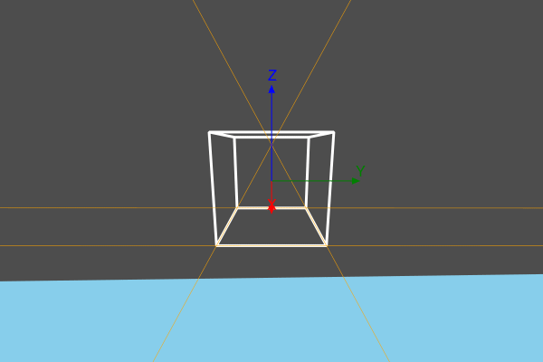

Views and perspective
Eyepoint and centerpoint
Thebes takes a simple view of life. There’s a global Thebes ‘realm’ which is created when you start using it. It’s a good idea to check and/or set the current viewing parameters when you start a new Luxor document, in case you’re inheriting anything from a previous run.
Here are the functions that control your view of the 3D scene:
helloworld()eyepoint()centerpoint()uppoint()perspective()
The first one is a useful one to remember: it simply resets all the viewing parameters to the default settings.
The eyepoint() function moves the eyepoint, and centerpoint() changes the location that is the center of your view. The uppoint() function specifies a point relative to centerpoint. A line running from centerpoint to the up point defines the “up” direction.
So, to see the side view of the helix, continued from the previous chapter, we can just lower our viewpoint a bit, from the default 100 in z down to 50:
helix = [Point3D(150cos(θ), 150sin(θ), 5θ) for θ in 0:π/48:4π]
setline(0.2)
eyepoint(500, 500, 50)
axes3D()
for p in helix
pin(p, Point3D(0, 0, p.z))
end
Perspective
As yet we've seen no perspective. The defaut value of the perspective parameter, as returned by perspective(), is 0. This means that there's none of that foreshortening or converging of lines that head off into the distance. And if you look at a cube, it has that familiar unrealistic appearance of cubes drawn without perspective.
function makecube()
cube = [
Point3D(1, 1, -1),
Point3D(1, -1, -1),
Point3D(-1, -1, -1),
Point3D(-1, 1, -1),
Point3D(1, 1, 1),
Point3D(1, -1, 1),
Point3D(-1, -1, 1),
Point3D(-1, 1, 1)]
r = Point3D[]
for e in (
[1, 2, 3, 4, 1],
[5, 6, 7, 8, 5],
[5, 1, 2, 6, 7],
[7, 3, 4, 8, 5])
append!(r, cube[e])
end
return r
end
pin(50makecube())
finish()
This animation views the cube and changes the perspective slowly, starting at 0, then moving from 300 up to 1400.

As the value of perspective increases, the apparent magnification increases, and parallel lines start to converge. The next example shows the converging parallel lines.
function makecube()
cube = [
Point3D(1, 1, -1),
Point3D(1, -1, -1),
Point3D(-1, -1, -1),
Point3D(-1, 1, -1),
Point3D(1, 1, 1),
Point3D(1, -1, 1),
Point3D(-1, -1, 1),
Point3D(-1, 1, 1)]
r = Point3D[]
for e in (
[1, 2, 3, 4, 1],
[5, 6, 7, 8, 5],
[5, 1, 2, 6, 7],
[7, 3, 4, 8, 5])
append!(r, cube[e])
end
return r
end
eyepoint(200, 50, 100)
perspective(150)
pts = pin(50makecube())
sethue("red")
setline(0.1)
for p1 in pts
for p2 in pts
p1 == p2 && continue
rule(p1, slope(p1, p2))
end
end
There are enough converging parallel lines there to give an ancient Egyptian architect nightmares.
Orbits
To fly around the scene, move the eyepoint around, while looking at the center.
using Thebes, Luxor
function frame(scene, framenumber, object)
background("skyblue")
setlinejoin("bevel")
setline(3.0)
sethue("grey30")
carpet(500)
eased_n = rescale(scene.easingfunction(framenumber, 0, 1,
scene.framerange.stop), 0, 1, 0, 2π)
sethue("white")
perspective(200)
eyepoint(200cos(eased_n), 200sin(eased_n), 40)
pts = pin(50object)
sethue("orange")
setline(0.5)
for pair in ((1, 2), (2, 3), (3, 4), (4, 1))
rule(pts[first(pair)], slope(pts[first(pair)], pts[last(pair)]))
end
axes3D()
end
function makecube()
cube = [
Point3D(1, 1, -1),
Point3D(1, -1, -1),
Point3D(-1, -1, -1),
Point3D(-1, 1, -1),
Point3D(1, 1, 1),
Point3D(1, -1, 1),
Point3D(-1, -1, 1),
Point3D(-1, 1, 1)]
r = Point3D[]
for e in (
[1, 2, 3, 4, 1],
[5, 6, 7, 8, 5],
[5, 1, 2, 6, 7],
[7, 3, 4, 8, 5])
append!(r, cube[e])
end
return r
end
function main()
w = 600
h = 400
movie1 = Movie(w, h, "3D movie")
cube = makecube()
d = animate(movie1,
Scene(movie1, (s, f) -> frame(s, f, cube),
1:150, easingfunction=easeinoutsine),
creategif=true,
framerate=20,
pathname="/tmp/orbiting-a-cube.gif")
return d
end
main()